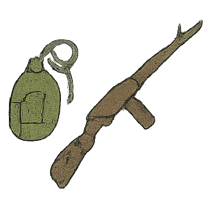
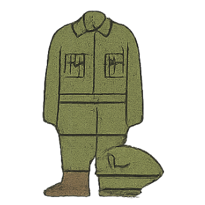
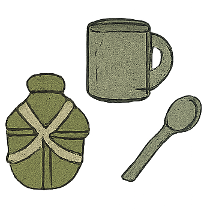

Зброя
Аўтамат
від аўтаматычнай стралковай зброі (фр. automate).
Не дакапалі мы акоп, кінулі лапаткі, а з салдатамі – аўтаматы ў рукі і туды.
Бомба
снарад, начынены выбуховым рэчывам (рус. бомба, укр. бомба).
Тым часам выбух бомбы ў цэху ўстрывожыў людзей.
Вінтоўка
ружжо са спіральнай нарэзкай у канале ствала (укр. гвінтівка, рус. винтовка).
Сям-там бачна, як высунецца і схаваецца ствол вінтоўкі, часам блісне на сонцы каска.
Гармата
агульная назва артылерыйскай зброі (cт.-бел. гармата, армата, ормата).
Апошняе часам злуе, мы гатовы тады сварыцца з абразнікам і паказвае яму на нашага камандзіра, страшнага сяржанта Жаўтых, які з сорак першага ваюе пры гэтых гарматках і нішто вось - жывы.
Гільза
ўстаўляецца капсуль (ням. hulse).
У Папова гэта выходзіць спрытна, спрактыкаваныя яго рукі так - і мільгаюць блішчастыя латунныя гільзы.
Затвор
частка агнястэльнай зброі для адкрывання і закрывання канала (укр. затвор, польск. zatwor).
Зараджаючы натрэніравана і размашыста ўсоўвае ў патроннік снарад, затвор, коратка лязгнуўшы, зачыняецца.
Карцеч
артылерыйскі снарад, начынены круглымі кулямі для масавага паражэння ўзброенай сілы праціўніка (польск. kartecza).
Я ведаю, гэта ён падрыхтаваў карцеч, значыць,праніклівы наводчык разумее, што ўсё там, на перадку, - не так сабе.
Куля
невялікі стальны або свінцовы прадаўгаваты снарад у патроне для стральбы з ручной агнястрэльнай зброі (польск. kula).
Наўкола яго блізка і далёка пылілі-трэскаліся кулі.
Кулямёт
аўтаматычная скарастэльная зброя для стральбы з кулямі (паходжанне не ўстаноўлена).
Усе нашы розныя няўдачы адбываліся па розных прычынах, але ўсе нашы поспехі – падбітыя ў красавіцкіх баях два танкі, спалены аўтамабіль, расстраляныя два кулямёты.
Магазін
каробка або трубка ў апараце, куды закладваецца што-небудзь (ням. magasin).
Люся, бяры новы магазін,- кажу я. - На гранату. Усім па адной.
Міна
снарад з выбуховым рэчывам, які закладаецца ў зямлю (польск. mina, франц. mine).
Гэтае шанцаванне прадстаўлялася аж да таго нешчаслівага моманту, калі генеральская машына выпадкам паляцела, пакінутую немцамі на ўзбочыне тылавой дарогію.
Патрон
гільза з капсулем, зарадам і куляй (польск. patron, франц.atron).
Колькі ў магазіне было патронаў, ён не ведаў, лічыць іх цяпер не было калі.
Патроннік
задняя частка канала ствала агнястрэльнай зброі, куды ўкладваецца патрон (польск. patron, франц. atron).
Зараджаючы натрэніравана і размашыста ўсоўвае ў патроннік снарад, затвор, коратка лязгнуўшы, зачыняецца.
Перыскоп
аптычны прыбор для назірання за чым-небудзь з укрыцця, танка і г.д.(грэч. periskopeo
Я прыморшчваюся на прыступкі, дзе сядзеў Лёшка, і асцярожна вытыркаю з-за бруствера востры кончык перыскопа-разведчыка.
Прыцэл
прыстасаванне на агнястрэльнай зброі для навядзення на цэль (ням. ziel).
Гэтымі рукамі ён увесь час майструе што-небудзь-то футарал для прыцэла, то паразае ўзор на партсігары.
Снарад
від боепрыпасаў для стральбы з гармат, а таксама лятальны апарат з баявым зарадам (ст.–рус. снарядь).
Не чакаючы загаду, выцягвае з нішы скрынку з недачышчанымі ўчора снарадамі.

Адзенне
Абмундзіроўка
камплект ваеннага форменнага адзення(рус.мундир, ням. montur, франц. monture).
Дзе стрэлася яму такая “ягадка - сястрычка”, і як ён, пераапрануўшыся, выходзіў да яе за агароджу.
Абмундзіроўка
камплект ваеннага форменнага адзення(рус.мундир, ням. montur, франц. monture).
Дзе стрэлася яму такая “ягадка - сястрычка”, і як ён, пераапрануўшыся, выходзіў да яе за агароджу.

Посуд

Ваеннаслужачыя

Ваенная тэхніка

Званні

Вайсковыя падраздзяленні

Месца для баявых дзеянняў